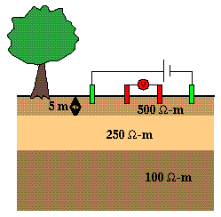
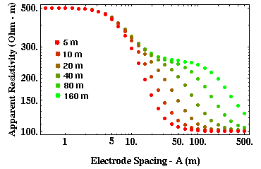

Two-Layered Media: Another Example

For many of the examples shown on the previous page, the middle layer could not be
recognized as a discrete unit.
Let's explore this a bit further by varying another parameter in this suite of two-layered models we are developing.
Previously, we held the resistivities and thicknesses of the two layers fixed and showed how the apparent resistivity
varied with electrode spacing as the resistivity of the halfspace varied.
Let's now fix the resistivities of the two layers and the halfspace and vary the thickness of the middle layer.
When given a choice of resistivities, we were unable to distinguish the middle layer in the previous set of
models. Can we see the middle layer if is thicker?
Consider the structure shown to the right which consists of two layers (the top one 5 meters thick with a resistivity of 500 ohm-m, the lower one with a varying thickness and a resistivity of 250 ohm-m) overlying a halfspace with a resistivity of 100 ohm-m. Previously, we showed that if the thickness of the middle layer is 5 meters, the apparent resistivity curve generated over this model looks indistinguishable from a simple one-layered model. Is this always true? Qualitatively, you would expect not. For example, if we were to make the thickness of the middle layer very large, you would expect the apparent resistivity to approach the resistivity of the middle layer, as electrode spacing is increased, rather than approaching the resistivity of the halfspace. Thus, we must be able to detect the presence of the middle layer for some critical thickness.

Shown above is a suite of apparent resistivity curves generated over earth models with varying middle-layer thicknesses. For thicknesses less than 10 meters, the apparent resistivity curve is indistinguishable from that generated over a one-layered earth structure; the top layer has a resistivity of 500 ohm-m and the bottom halfspace has a resistivity of 100 ohm-m. As the thickness of the middle layer is increases, the resistivity curve still decreases monotonically with increasing electrode spacing, but a characteristic hump begins to develop in the curve. This hump becomes apparent for thicknesses as small as 40 meters. As thickness is increased, it is apparent that this hump represents a flattening in the apparent resistivity curve at the resistivity of the middle layer, 250 ohm-m. Thus, if the middle layer is thick enough, it can be distinguished in the apparent resistivity curve. Note also, however, that if it becomes too thick, then for a fixed maximum electrode spacing, we would never see the resistivity of the halfspace. That is, if the thickness of the middle layer is large compared to our maximum electrode spacing, the apparent resistivity curve will again approximate that generated by a one-layered model. This time, however, the curve will asymptotically approach the resistivity of the middle layer instead of the resistivity of the halfspace.
Resistivity
- Current Flow and Ohm's Law pg 4
- The Fund. Electrical Property is Resistivity, NOT Resistance pg 5
- Resistivities for Common Earth Materialspg 6
- Current Density and Electric Fieldpg 7
- A First Estimate of Resistivitypg 8
- Current Flow From Two Closely Spaced Electrodespg 9
- A Practical Way of Measuring Resistivity pg 10
- Sources of Noise pg 11
- Depth of Current Penetration V.S. Current ElectrodeSpacing pg 12
- Current Flow in Layered Media pg 13
- Variation in Apparent Resistivity: Layered Versus Homogeneous Media pg 14
- Current Flow in Layered Media Versus Electrode Spacing pg 15
- A Second Example of Current Flow in Layered Mediapg 16